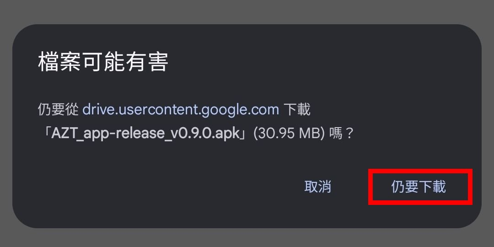
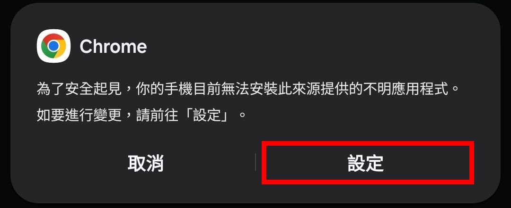
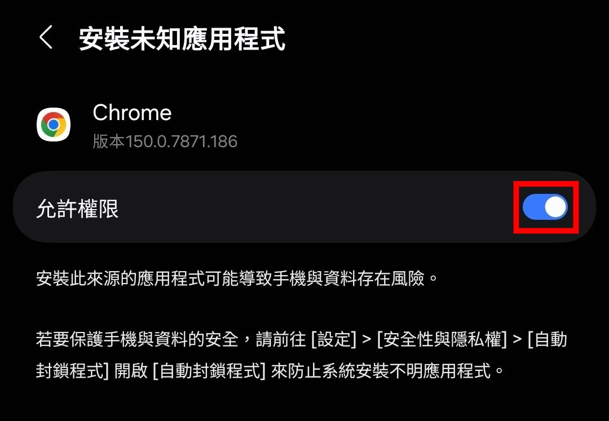
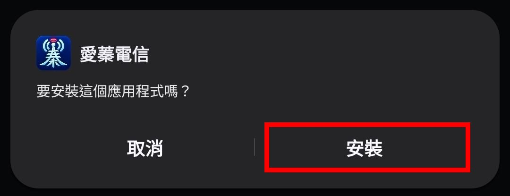
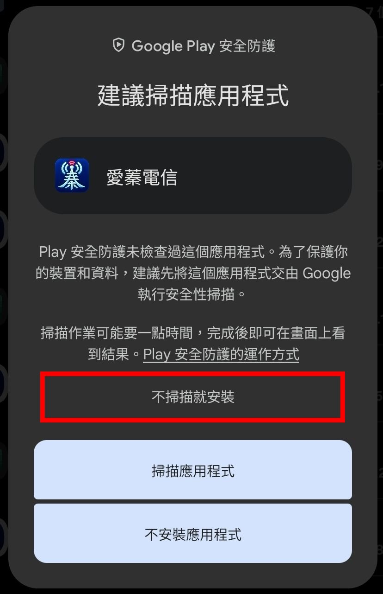
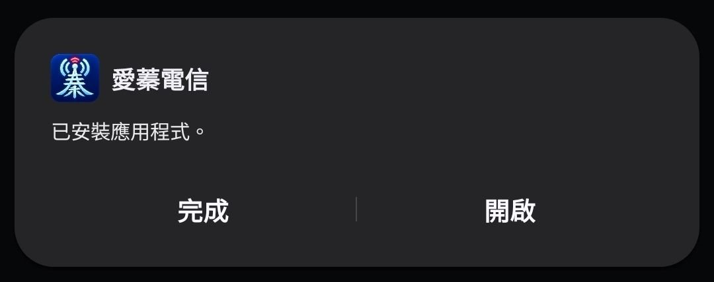

基地台資訊，一目了然
- 醒目的電信業者主題色鐵塔和頻段燈號設計，搭配基地台資訊，連線狀態輕鬆掌握。
- 獨特站台醒目顯示，遇到中華多Cell站台、遠傳eNB+50000，又或者台哥大單頻站，一眼就能辨認出來。
- 支援訊號回放功能，精彩訊號不怕消失！
- 內建站台號碼遮蔽功能，分享截圖也能守住隱私。
Preview
點擊圖片可放大檢視
About the app
愛蓁電信(AiZhen Telecom) 是一款專為台灣三大電信業者打造的行動網路測試App，由愛蓁親自設計，透過AI輔助開發，無論是電信工程師還是行動網路愛好者，都能輕易上手，內建各項實用與驚艷功能，手機無須ROOT就能使用。


此App暫時未打算於Play商店上架，因此只能以外部Apk的方式來安裝。
App僅適用於Android 10以上的手機。






目前暫無上架Play商店的計畫，需透過外部Apk安裝。
目前的確是為國內三家電信業者(中華電信、遠傳電信、台灣大哥大)設計，接收到國外的其他電信業者可能無法正常顯示。
最低的支援版本為Android 10。
不需要ROOT。
App為Non-Root設計，無法鎖定頻段喔！
App採贊助制度，只要贊助30元即可取得30天完整功能授權。但贊助並非強制，只要對App有貢獻者(包含但不限於協助Debug除錯、功能建議、使用體驗分享等)皆可以獲得不定期的完整功能授權延長。
電話、位置權限為讀取並顯示基地台資訊的必要權限。通知功能則需要允許通知權限。
請放心，這些資料僅會儲存在您的手機上，絕不會回傳到外部伺服器，詳情請見App中的隱私權政策。
可以在「裝置與授權」頁面中查看App版本，若有新版本可下載，旁邊即會出現「有新版本」的按鈕。下載後原則上可以直接以更新方式完成(既有觀測資料不會遺失)，不用重新解除安裝。
原則上不會。但還是會建議您先將基地台資料庫做一次CSV匯出，以防止意外情形。
(1) 確認已授予電話及位置權限。
(2) 確認目前人在台灣，且使用的是國內三大電信業者SIM卡或可漫遊的SIM卡，且訊號格顯示有訊號。
如果仍無法顯示，請回報給愛蓁。
「*」表示該參數值屬於間接取得，例如可能你的手機能取得EARFCN頻點號，但是卻無頻寬資料，但App會根據該頻點去間接參照得到頻寬資訊，再顯示出來。您可以至設定，將「隱藏推測標示」打開來隱藏「*」標識。
這取決於您手機的modem晶片、廠商調校及安卓版本。一般來說：
(1) 高通晶片在LTE的顯示較為完整，但三星手機可能無法讀取到5G NSA頻段。
(2) MTK晶片在LTE顯示上可能缺少部分資料，但5G NSA則較為完整。
(3) Pixel手機的三星modem晶片在LTE/NR資料上較為完整，但讀取的延遲性較大，偶有讀取不到資料的情況。
同上一題的說明，與您的手機modem回傳原始資料有關。若您發現使用其他第三方App(如NetMonster、NetMonitor等)可以正確顯示，但在此App不能，請回報給愛蓁以利後續調整改善。
這是因為Android開放資料很多時候只能解析出4個載波，第5個載波是App根據回傳的總頻寬及現有4載波推估出來的，因此無法顯示RSRP/RSRQ訊號資料。
這部分我們已經做了多次最佳化調整，如果您發現仍有此情形，可先至設定，將「CA頻段順序推測」改成另一種方式。
這是正常的情況，非Root下大多數情況只能取得P Cell的SNR值。
目前無法自訂調整。我們已經盡量對應合理的數值區間顏色。
鐵塔圖示旁邊的頻段會根據當前連接的電信業者對應顯示，例如中華電信就有兩個1800MHz，對應EARFCN1400及1750，這是正常的。
(1)「RRC-CONN」表示當前RRC處於連接狀態。
(2)「RRC-IDLE」則為待機狀態。
(3)「ULI」表示上層指示(Upper Layer Indication)，即該4G站台具有連接5G NSA的能力。
(4)「ENDC」表示雙連結，亦即現在已經連上4G+5G NSA。
(5)「DCNR-R」表示NR連接受限(Restriction)，您的SIM卡方案無法連接到5G。
(6)「Threm」亮起表示裝置溫度較高，建議停止保持RRC連線、連續上下載等功能。
這表示偵測您的手機eNB取值有問題或延遲，為避免造成站台資料庫和定位產生衝突，App進行防寫保護，再取得正確的eNB值會重新顯示。
這裡的Cell只是Local Cell ID，ECI=eNB*256+CID。Cell ID通常包含射向和頻段資料，由各業者自行編碼，在本App會自動對應三家電信的編碼方式。您可以在設定選擇「Cell呈現方式」，例如中華電信的23表示第2個射向和1750的頻點，若選擇「僅射向」，Cell欄位就只會呈現「2」。
特殊或罕見的eNB站台號碼或Cell，會以不同顏色來達到醒目顯示效果。
特殊eNB包含以下：
(1) 中華電信eNB第二碼不為1或2，或是第3碼為9。
(2) 遠傳電信eNB第二碼+5。
(3) 台灣大哥大eNB第4碼為6。
Cell醒目顯示則是當出現第7~9射向時。
功能按鈕依據如下：
(1) SIM卡切換按鈕：可切換SIM卡1/SIM卡2。若只有插入1張SIM卡，此按鈕不可按。
(2) 暫停回放按鈕：可以回放查看自本次App開啟到目前的訊號資料。(最長支援至2小時)
(3) 儲存按鈕：可將本次App開啟到目前的訊號資料儲存成回放log專案檔。
(4) 導入按鈕：可導入過去的回放log專案檔進行檢視。
(5) RRC CONN按鈕：可讓RRC保持連接狀態。
(6) 網速檢視按鈕：可切換檢視網速圖表畫面，再點一下切回基地台畫面。
(7) 隱私按鈕：可隱藏部分TAC/eNB碼位，或完全隱藏。
(8) 連續下載按鈕：開始/停止進行連續下載測試。
(9) 連續上傳按鈕：開始/停止進行連續上傳測試。
可以。請至設定，將「自訂功能按鈕顯示與排序」開啟，即可調整按鈕順序，或隱藏部分按鈕。
此功能無法在連上Wi-Fi時使用，請先關閉Wi-Fi網路。
P表示主頻段(Primary Cell)，S表示CA頻段(Secondary Cell)，依據順序為S1、S2、S3、S4。N則是鄰近的訊號(Neighbor Cell)。
(1) 請確認已開啟設定中的「啟用地圖定位功能」，以及「透過定位及訊號推算站台位置」。
(2) GPS訊號定位誤差需小於30米，才能做有效定位依據。
(3) 手機須保持RRC連線狀態，才能用TA值進行距離定位，您可以在基地台頁面中，點選「RRC CONN」圖示，讓手機保持在RRC連線狀態。
(4) 如果您希望在背景/關閉螢幕時持續定位站台，請至設定，將記錄方式改為「始終紀錄軌跡」。
定位演算法是根據您的實際觀測數據，利用GPS位置及當下的eNB/PCI/RSRP/TA等參數來推估站台位置，若觀測點數量較少(例如僅單方向經過)或數據品質較低(例如GPS精度差、TA遠)，就可能導致定位的誤差較大。
可以到站台資料庫，長按該eNB，選擇「僅刪除定位推估資料」即可。
不會的，這些資料僅會儲存在您的手機上。若往後欲更換手機，可以將站台資料庫匯出，該CSV檔會保存站台推估的位置資訊。
目前尚未提供此功能，會在之後的版本考慮加入。
(1) 請確認已允許通知權限，並於設定中啟用「基地台在附近時通知我」。
(2) 可選擇較低的通知門檻，例如「站台可能在附近」。
(3) 若您的手機TA值更新緩慢，可以選擇「自訂通知門檻」，然後將「TA值」條件關閉。
當網路連線狀態發生改變時，就稱為事件，包含以下行為：
(1) 網路類型變更(RAT_Change)：亦即網路種類發生改變，例如4G LTE變成3G WCDMA等。
(2) LTE站內交遞(LTE_Intra-cell Handover)：在同一個eNB內的交遞，你會看到Cell/PCI發生改變。
(3) LTE站間交遞(LTE_Inter-cell Handover)：交遞到另一個基地台，eNB發生改變。
(4) LTE異頻交遞(LTE_Intra-frequency Handover)：P Cell(主頻段)的頻點發生改變。
(5) LTE CA加入(LTE_CA-Add)：由無CA變成有CA載波狀態。
(6) 追蹤區更新(LTE_TAU)：TAC的值發生改變。
(7) LTE細胞重選(LTE_CellReselection)：RRC IDLE狀態時，P Cell頻段、PCI或eNB有任一項發生改變。
(8) LTE連線中斷(LTE_Disconn)：網路服務狀態由In Service(服務中)轉變為Out of Service(沒有服務)。
(9) LTE連線恢復(LTE_Conn)：網路服務狀態由Out of Service(沒有服務)轉變為In Service(服務中)。
(10) NR連線加入(NR_SCG_Addition)：基於LTE網路，加入SCG NR Cell，形成EN-DC雙連接。
(11) NR連線移除(NR_SCG_Removal)：SCG NR Cell斷開，回到純LTE狀態。
(12) LTE RRC連接建立(LTE_RRC_Conn)：RRC狀態由IDLE轉變為CONN。
(13) LTE RRC連接釋放(LTE_RRC_Rele)：RRC狀態由CONN轉變為IDLE。
此外，還有一些是您在App中執行的操作，也會被記錄到事件中，包含：
(1) 保持Ping(Ping_Start)：執行了「保持RRC連接」的操作。
(2) 結束Ping(Ping_End)：終止「保持RRC連接」操作(或持續時間已到)。
(3) 回放開始(Replay_Start)：執行了「回放」的操作，期間不會寫入新的事件。
(4) 回放結束(Replay_End)：結束「回放」模式。
不是，Non-Root情況下無法解析到原始的LTE/NR信令。App是根據網路的連接狀態與變化來推斷可能發生的相應事件，並非保證完全正確，例如TAC發生改變，實際上並不一定就是觸發了TAU事件。
長按該站台卡片，即可刪除單一筆eNB資料，也可以只刪除定位資料。
(1) 「EN-DC」標示表示您連接上該eNB時，曾經連上5G NSA網路，但這未必等於該4G站台有架設5G天線。
(2) 「定位」標記符號表示App曾經透過多參數解算推估過該站台的位置。
可以到設定的「事件/資料庫」分類，將「顯示站台推估的大概位置」開啟。
可能是該位置無法直接解析出門牌地址，因而出現奇怪亂碼的狀況。App會在無法解析時改以縣市行政區或經緯度座標顯示。
eNB實際上指的是BBU編號，是有可能出現兩個不同的站址共用同一個BBU的狀況，App會根據定位推估嘗試拆分實體站址。這種站台通常有超過5個Cell，或是更多。
匯出或儲存時會讓您選擇存放位置及編輯檔名，預設也是儲存在Download資料夾。
不會，兩份資料會採用聯集合併的方式處理。